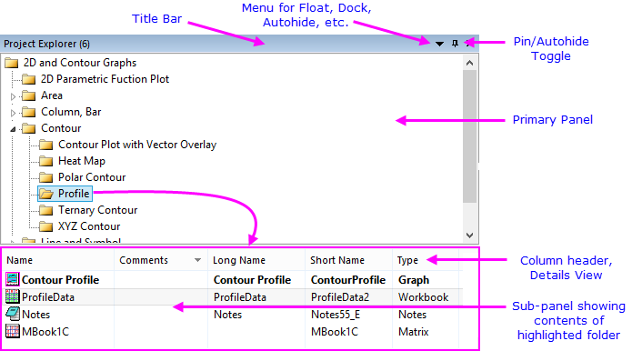

Projekt Explorer
Project-Explorer
Projekt Explorer anzeigen oder ausblenden
Um den Projekt Explorer anzuzeigen oder auszublenden:
-
- Klicken Sie auf die Schaltfläche Projekt Explorer
 auf der Symbolleiste Standard oder klicken Sie auf Ansicht: Projekt Explorer im Origin-Menü (Tastaturkürzel: Alt + 1)
auf der Symbolleiste Standard oder klicken Sie auf Ansicht: Projekt Explorer im Origin-Menü (Tastaturkürzel: Alt + 1)
-
- Klicken Sie mit der rechten Maustaste auf die Titelleiste des Projekt Explorers, um das Fenster automatisch frei zu bewegen, anzudocken oder automatisch im Vordergrund zu verbergen.
Übersicht des Projekt Explorers
Der Projekt Explorer ist ein Hilfsmittel, das Sie dabei unterstützt, die Inhalte Ihrer Origin-Projektdateien (OPJ) zu verwalten.
- 
- Der Projekt Explorer besteht aus zwei Bedienfeldern. Das erste Bedienfeld (oben) zeigt eine Projektordnerstruktur an. Das untergeordnete Bedienfeld (unten) zeigt die Fenster in dem Ordner, der im ersten Bedienfeld markiert ist.†
- Kontextmenüs in beiden Bedienfeldern bieten Optionen zum Löschen, Verbergen, Drucken etc. Menüoptionen variieren abhängig davon, was ausgewählt ist bzw. auf welche Stelle Sie mit der rechten Maustaste geklickt haben.
- Im unteren Bedienfeld des Projekt Explorers können Sie Fenster verbergen, zeigen oder löschen.
- Klicken Sie mit der rechten Maustaste auf die Titelleiste des Projekt Explorers, um die Bedienfelder gestapelt anzuzeigen (vertikal ausgerichtet) oder nebeneinander (horizontal ausgerichtet).
- Klicken Sie mit der rechten Maustaste im unteren Bedienfeld auf die Ansicht Details, um einzelne Überschriften ein- bzw. auszuschalten.
- Wählen Sie im unteren Bedienfeld mehrere Fenster aus, indem Sie die Shift- oder Strg-Taste gedrückt halten, während Sie mit der Maus auf die entsprechenden Fenster klicken.
- Das untergeordnete Bedienfeld unterstützt unterschiedliche Ansichten der Fenster: Details (Standard), Liste, Kleine Symbole, Große Symbole, Extragroße Symbole.
- In jeder der Fensteransichten können Sie mit der Maus über ein beliebiges Fenster fahren, um Kommentare, Inhalt oder eine Vorschau anzuzeigen.
- Wenn Sie mit der Maus über einen Ordner im oberen Bedienfeld fahren, zeigt ein Tooltipp den Ordnerinhalt und optionale Kommentare an. Klicken Sie mit der rechten Maustaste auf den Ordner und wählen Sie Eigenschaften, um Kommentare zu einem Ordner hinzuzufügen.
- Klicken Sie auf der rechten Maustaste auf das Unterbedienfeld und die Option Speichergröße zeigen ist aktiviert. Sie zeigt die geschätzte Größe beim Speichern der Projektdatei, nur anwendbar, wenn Links zu externen Dateien bestehen.
- Wenn Sie Fenster als Extragroße Symbole anzeigen, sehen Sie ein Vorschaubild des Fenster, das jedes Mal, wenn das Fenster aktualisiert wird, neu erzeugt wird.
-
Hinweis: †Vor 2018 listete das untere Bedienfeld die Unterordner im ausgewählten Ordner auf. Wenn Sie das alte Verhalten wiederherstellen möchten, öffnen Sie das Skriptfenster (Fenster: Skriptfenster), geben Sie Folgendes ein und drücken Sie <Enter>:
@PEF = 1
Um das Verhalten permanent zu ändern, lesen Sie bitte FAQ-708: Wie ändere ich permanent den Wert einer Systemvariablen?
|
Vorschauen des Projekt Explorers
In allen Ansichten der untergeordneten Felder wird eine Popup-Vorschau erzeugt, wenn Sie die Maus Maus über ein Fenster bewegen. Vorschaubilder werden aus dem Stand erzeugt und bei jeder Aktualisierung eines Fensters mit aktualisiert (möglicherweise ist es erforderlich, das untergeordnete Feld mit Aktualisieren (F5) zu aktualisieren).
-
Arbeitsmappen sind in dem Sinn einzigartig, als dass sie es Ihnen ermöglichen, aus drei Vorschautypen zu wählen:
- Komprimiertes Bild (Standard): Das Popup-Bild für alle Fenstertypen ist ein Duplikat von dem, was der Anwender sieht, wenn das untergeordnete Feld auf die Ansicht der extragroßen Symbole umgeschaltet wird.
- Zusammenfassung und Listenansicht: Das Popup-Bild ist eine Zusammenfassung des Mappeninhalts (ggf. Kommentare, Anzahl der Blätter etc.) plus eine Tabelle mit der Listenansicht mit Spaltenkurzname, Spaltenlangname (falls vorhanden) und Sparklines.
- Zusammenfassung und Rohdaten: Das Popup-Bild ist eine Zusammenfassung des Mappeninhalts (ggf. Kommentare, Anzahl der Blätter etc.) plus eine Standardansicht (Roh) der Arbeitsmappe mit Spaltenkurzname und Sparklines.
-
Eine Vorschaueinstellung, die an einer Mappe vorgenommen wird, wird global auf alle Arbeitsmappen im Projekt angewendet. Vorschau ist eine Fenstereigenschaft und wird im Dialog Fenstereigenschaften festgelegt.
Hinweis: Die folgenden LabTalk-Systemvariablen können verwendet werden, um die Vorschauen des Projekt Explorers zu verändern:
- Um die Verwendung der Vorschaubilder nach Fenstertyp zu steuern, siehe @PESS.
- Um den Standardvorschautyp für Projektarbeitsmappen zu ändern, siehe @PEWP.
- Um die Anzahl der Zeilen, die in den Vorschauen Zusammenfassung und Listenansicht angezeigt werden zu ändern, siehe @WPC.
- Um zu steuern, ob es notwendig ist, die Strg-Taste gedrückt zu halten, um die Anzeige des Vorschaubilds zu aktivieren, siehe @PEK.
Sie können auch die Option Strg für Vorschau gedrückt halten im Kontextmenü des Projekt Explorers verwenden, um diese Einstellung festzulegen.
Informationen zum Ändern des Wert einer Systemvariablen finden Sie unter FAQ-708 Wie ändere ich permanent den Wert einer Systemvariablen?.
|
Fenster in Ihrem Projekt suchen
Zusätzlich zur Anzeige der Fenstervorschau im Unterfeld des Projekt Explorers ist der Dialog Suchen zu sehen, mit dem Sie Fenster in Ihrer Projekt-Datei suchen können:
- Klicken Sie mit der rechten Maustaste auf einen beliebigen PE-Ordner und klicken Sie auf Suchen.
- Geben Sie eine Suchzeichenkette im Feld Suchobjekt ein.
- Das gesamte Projekt, der aktive Ordner oder der aktive Ordner mitsamt seinen Unterordnern wird durchsucht.
-
- Optionen zur Übereinstimmung mit Groß-/Kleinschreibung, ganzen Wörtern oder Verwendung von Platzhaltern "*" bzw. "?" bei Ihrer Suche
- Suche in Ordnern, Diagrammen, Mappen, Blättern oder Spalten sowie Auswahloptionen, um Ihre Suche einzugrenzen bzw. auszuweiten
- Zusätzliche Optionen, um Arbeitsblattdaten und Textobjekte in Diagrammen zu durchsuchen
-
Laden eines Projekts durch Ausblenden von Fenstern beschleunigen
Standardmäßig werden alle Projektfenster im Origin-Arbeitsbereich gezeigt. Beim Öffnen von gespeicherten Projekten hängt die Fensteranzeige vom Status Zeigen/Verbergen des Fensters zu dem Zeitpunkt, an dem das Projekt gespeichert wurde, ab. Falls Ihr Projekt langsam geladen wird oder der Arbeitsbereich überfüllt ist. Eine Option besteht darin, das Projekt ohne Anzeige der Fenster zu laden.
- Um den Arbeitsbereich zu konfigurieren, so dass die Projektfenster nicht beim Laden angezeigt werden, klicken Sie auf Ansicht: Fenster zeigen: Kein Fenster zeigen oder klicken Sie mit der rechten Maustaste in das erste Bedienfeld des PE und wählen Sie Fenster zeigen: Kein Fenster zeigen. Diese Einstellung bleibt während der gesamten Sitzung wirksam, es sei denn, sie wird geändert.
- Eine weitere Option ist die Verwendung der Systemvariablen @PEN, um die Anzahl der Fenster, die angezeigt werden kann, in einem gegebenen Ordner zu begrenzen. Diese Einstellungen wird zum ersten Mal wirksam, wenn Sie die Ordner im Projekt Explorer wechseln. Diese Einstellung wird in der Registry gespeichert und bleibt wirksam, bis Sie den Wert von @PEN ändern.
- Eine dritte Option besteht in einem Rechtsklick auf den Ordner im Projekt Explorer und der Wahl von Alle Fenster verbergen oder der Verwendung des Menübefehls Fenster: Alle Fenster verbergen. Beachten Sie, dass Sie das Projekt in diesem Zustand speichern können und die Fenster verborgen werden, wenn Sie das Projekt erneut öffnen. Zeigen Sie die Fenster an, indem Sie doppelt auf das abgeblendete Fenstersymbol im unteren Bedienfeld des Projekt Explorers klicken oder mit der rechten Maustaste auf den Ordner im oberen Bedienfeld des PE klicken und Alle Fenster zeigen wählen.
 |
Es gibt einige Dinge, die veranlassen, dass Origin langsamer ausgeführt wird. Falls Origin bei der Arbeit mit einem Projekt schwerfällig wirkt, siehe diese FAQ.
|
Ordner oder Fenster verschieben
-
- Um einen Ordner oder ein Fenster innerhalb des Origin-Projekts zu verschieben, ziehen Sie den Ordner/das Fenster auf einen anderen Ordner.
Fenster im Projekt Explorer duplizieren
- Um Fenster im gleichen Ordner zu duplizieren, drücken Sie die Strg-Taste und ziehen Sie die ausgewählten Fenster ins untergeordnete Bedienfeld des Projekt Explorers.

- Um Fenster in einem anderen Ordner zu duplizieren, klicken Sie, um die Fenster auszuwählen. Drücken Sie dann die Strg-Taste und ziehen Sie die Fenster in einen anderen Ordner im Hauptfeld des Projekt Explorers.

Shortcut zu einem Fenster erstellen/entfernen
Shortcuts zum Favoritenordner hinzufügen
- Klicken Sie mit der rechten Maustaste auf ein Fenster im PE. / Klicken Sie mit der rechten Maustaste auf den Header eines Fensters.
- Wählen Sie Shortcuts zu Favoriten hinzufügen.
Ein Favoritenordner wird zur OPJ-Ordnerstruktur hinzugefügt und die Fenstershortcuts werden in den Favoritenordner eingefügt.
Hinweis: Im Favoritenordner sind die Fenstershortcuts verborgen.
Shortcuts zu anderen Ordnern hinzufügen
- Drücken Sie die Alt-Taste und ziehen Sie ein Fenster in einen anderen Ordner. Auf diese Weise wird in diesem Ordner ein Shortcut zu diesem Fenster erstellt.
oder
- Klicken Sie im Fensterheader auf die rechte Maustaste und wählen Sie Shortcuts hinzufügen zu (Seesaw zum Sehen von):...
Es wird ein Shortcut im zuletzt aktiven Ordner erstellt.
|
Zum Beispiel:
- Aktivieren Sie Ordner2 im Projekt Explorer.
- Klicken Sie auf Ordner1 und dann mit der rechten Maustaste auf den Header von Mappe1 im Ordner1. Wählen Sie danach Shortcuts hinzufügen zu (Seesaw zum Sehen von): Ordner2, um einen Shortcut zu Ordner2 hinzuzufügen.
|
Shortcuts zu aktivem Ordnern hinzufügen
Klicken Sie bei einem aktivierten Ordner mit rechten Maustaste auf einen anderen Ordner, um im Kontextmenü Shortcuts hinzufügen und den Dialog Shortcuts zu aktivem Ordner hinzufügen zu öffnen:
In diesem Dialog können Sie entscheiden, welcher Fenstertyp als Shortcuts im aktiven Ordner gezeigt werden soll.
Wenn Sie die Fenstertypen gewählt haben, für die Sie Shortcuts hinzufügen möchten, können Sie die Option Hinzugefügte Fenster anordnen aktivieren, um die Shortcutfenster im aktiven Ordner alle anzuordnen.
Zum ursprünglichen Ordner wechseln
Um über den Shortcut zum ursprünglichen Ordner zu gehen:
- Klicken Sie mit der rechten Maustaste auf den Shortcut im Projekt Explorer und wählen Sie Zum ursprünglichen Ordner wechseln.
oder
- Klicken Sie mit der rechten Maustaste auf den Header des Shortcutfensters und wählen Sie Zum ursprünglichen Ordner wechseln.
oder
- Klicken Sie auf die Schaltfläche Zum ursprünglichen Ordner wechseln
 auf dem Header des Shortcutfensters.
auf dem Header des Shortcutfensters.
Shortcuts entfernen
Klicken Sie auf die Schaltfläche Schließen des Shortcutfensters. Es wird nur verborgen.
Um den Shortcut zu entfernen:
- Klicken Sie mit der rechten Maustaste auf den Shortcut im Projekt Explorer und wählen Sie Löschen.
oder
- Klicken Sie mit der rechten Maustaste auf den Ordner im PE und wählen Sie Shortcuts entfernen. (Es werden alle Shortcuts in diesem Ordner entfernt).
Anzeige oder Ordnung der Spalten in der Ansicht Details ändern
Wenn das Unterfeld des PE die Ansicht Details zeigt (klicken Sie mit der rechten Maustaste auf einen freien Bereich und wählen Sie Ansicht: Details), passen Sie nach eigenem Belieben an, welche Informationen angezeigt werden sollen:
-
- Klicken Sie mit der rechten Maustaste auf den Spaltenkopf und aktivieren bzw. deaktivieren Sie eine Überschrift, die angezeigt oder ausgeblendet werden soll.
- Ziehen Sie an den Spaltenüberschriften, um sie neu zu ordnen.
Im Projekt Explorer sortieren
In der Detailansicht des Projekt Explorers werden mehrere Attribute der Fenster und Ordner aufgeführt.
-
- Klicken Sie auf den Spaltenkopf, um die Fenster im Projekt Explorer zu sortieren. Der nach oben weisende Pfeil bedeutet aufsteigend. Der nach unten weisende Pfeil bedeutet absteigend.
- Um mit mehreren Attributen geschachtelt zu sortieren, halten Sie die Shift-Taste gedrückt, bevor Sie auf einen sekundären Spaltenkopf klicken usw.
Ordner oder Fenster umbenennen oder Kommentare hinzufügen
-
- Um einen Ordner- oder einen Fensterlangnamen zu ändern, klicken Sie mit der rechten Maustaste auf den Ordner (beide Felder) bzw. das Fenster und wählen Sie Umbenennen oder Eigenschaften.
- Um die Umbenennung über die direkte Bearbeitung durchzuführen, klicken Sie mit der linken Maustaste einmal auf den Ordner (beide Felder) bzw. das Fenster (die Spalte Langname oder Kurzname wird im Unterfeld angezeigt). Klicken sie dann ein zweites Mal. Geben Sie den Namen ein.
- Zusätzlich zu den Spalten Langname und Kurzname gibt es eine Spalte Name, die den Fensterlangnamen anzeigt, falls er existiert. Sie können entweder den Lang- oder den Kurznamen von dieser Spalte aus umbenennen, indem Sie auf die Schaltfläche LN/SN klicken, um zwischen den beiden Namen zu wechseln.

- Klicken Sie mit der linken Maustaste einmal auf die Spalte Kommentare (Unterfeld), um die Kommentare per direkter Bearbeitung hinzuzufügen/zu bearbeiten, und klicken Sie noch mal. Geben Sie Ihre Kommentare ein.
Hinweise:
- Vor Origin 2015 SR1 wurde die Option Umbenennen im Projekt Explorer zum Bearbeiten des Fensterlangnamens verwendet. Sie können das alte Verhaltenn wiederherstellen, indem Sie die Systemvariable @PERB = 0 festlegen (siehe Dokumentation für @PERB).
- Sie können wählen, dass der Fensterlangname (Kurzname, wenn der Langname nicht existiert) nur in anderen Ansichtsmodi als Details gezeigt wird, indem Sie mit der rechten Maustaste in das untere Bedienfeld klicken und Lang- und Kurznamen zeigen deaktivieren. Standard ist, dass sowohl Lang- als auch Kurznamen im Format KN - LN gezeigt werden.
|
Ordnernotizen
Um Ordnernotizen zu einem Ordner im Projekt Explorer hinzuzufügen:
- Klicken Sie mit der rechten Maustaste auf den Ordner und wählen Sie Ordnernotizen.
oder
- Klicken Sie auf den Ordner und dann auf die Schaltfläche Ordnernotizen auf der Minisymbolleiste.
- Wenn kein Ordnerkommentar vorhanden ist, wird ein leeres Fenster für die Ordnernotizen zum Ordner hinzugefügt.
- Ordnernotizen verwenden standardmäßig Origin Rich Text. Um die Syntax zu wechseln, wählen Sie Notizen: Syntax oder klicken Sie mit der rechten Maustaste auf die Fenstertitelleiste der Ordnernotizen und wählen Sie Syntax (auf dieser Seite finden Sie Optionen zum Hinzufügen und Anzeigen des Inhalts von Notizfenstern).
- Ändern Sie die Standardsyntax durch Ändern des Werts der Systemvariablen @FNS.
- Falls es einen Kommentar gibt (Hinweis: Klicken Sie mit der rechten Maustaste auf den Ordner und wählen Sie Eigenschaften.) wird durch Hinzufügen von Ordnernotizen der Kommentar in das Fenster der Ordnernotizen kopiert.
- Beim Wechseln zwischen Ordnern wie zum Beispiel mit der neuen Symbolleiste Ordner und Fenster werden diese Ordnernotizen immer im Arbeitsbereich angezeigt, unabhängig davon, ob sie verankert oder minimiert sind.
- Wenn Sie die Ordnernotizen schließen (d. h. durch Klicken auf die Schaltfläche Schließen
 ), werden Sie im Ordner eingebettet und erst dann wieder angezeigt, wenn Sie mit der rechten Maustaste auf den Ordner im PE klicken und Ordnernotizen wählen.
), werden Sie im Ordner eingebettet und erst dann wieder angezeigt, wenn Sie mit der rechten Maustaste auf den Ordner im PE klicken und Ordnernotizen wählen.
- Drücken Sie die Strg-Taste und bewegen Sie die Maus über einen Ordner, um die Vorschau der Ordnernotizen zu sehen. Ordnerkommentare werden als Tooltipp in Klartext angezeigt.
Symbolleiste Ordner und Fenster
Die Symbolleiste Ordner und Fenster macht es einfacher, zwischen den Ordnern des Projekt Explorers (PE) zu wechseln (Zurück zum vorherigen Ordner) oder das aktive Fenster als einen Shortcut in den vorherigen Ordner einzufügen. Außerdem kann das aktive Fenster verankert oder die Fenster im aktiven Ordner angeordnet werden über Fenster: Fenster anordnen: <Zuletzt verwendet>.
-

- Ordner zurück: Vom aktuellen Ordner zum vorherigen Ordner zurückkehren.
- Ordner weiter: Vom vorherigen Ordner zum aktuellen Ordner zurückkehren.
- Zurück zum vorherigen Ordner: Zwischen den beiden Orderner hin- und herwechseln (Strg + Alt + X). Im Menü Fenster: Zurück zum vorherigen Ordner.
- Shortcut des aktiven Fensters für Zurück zum vorherigen Ordner hinzufügen: Das aktive Fenster mit dem vorherigen Ordner als Shortcut teilen (Strg + Shift +F7). Alternativ klicken Sie mit der rechten Maustaste auf den Fenstertitel und fügen einen Shortcut zum vorherigen Ordner hinzu.
- Shortcuts von vorherigem Ordner hinzufügen: Shortcuts nach Fenstertyp zum aktuellen Ordner hinzufügen.
- Fenster anordnen (zuletzt verwendet): Wie Fenster: Fenster anordnen <Zuletzt verwendet>.
- Aktives Fenster verankern: Fenster verankern, so dass es nicht eingeschlossen ist, wenn auf Fenster anordnen (Zuletzt verwendet) geklickt wird. Alternativ klicken Sie mit der rechten Maustaste auf den Fenstertitel und verankern Sie das Fenster (oder lösen Sie es).
Grafiken als Slide-Show anzeigen und Grafiken an PowerPoint senden
-
- Um eine Slide-Show der Grafiken in Ihrem Projekt anzuzeigen, klicken Sie mit der rechten Maustaste auf den PE-Ordner, der die Diagramme enthält, und wählen Sie Slide-Show der Grafiken.
- Eine Slide-Show von allen Diagrammen, die aus einer oder mehreren Arbeitsblattspalten gemacht wurden, zeigen Sie an, indem Sie die Spalten markieren, dann auf diese Spalten klicken und im Hauptmenü Spalte: Slide-Show der abhängigen Diagramme wählen.
- Um Diagramme an eine PowerPoint-Datei zu senden, klicken Sie mit der rechten Maustaste auf den PE-Ordner, der die Diagramme enthält, und wählen Sie Grafiken an PowerPoint senden.
Diagrammordnung für Slide-Show oder PowerPoint ändern
-
- Zeigen Sie das untere Bedienfeld des Projekt Explorers (PE) in der detaillierten Ansicht an.
- Stellen Sie sicher, dass die Spalte Folie in der detaillierten Ansicht gezeigt wird. Klicken Sie mit der rechten Maustaste auf einen Spaltenheader, um sicherzustellen, dass das Kontrollkästchen Folie aktiviert ist. Sie müssen vielleicht Ihren Projekt Explorer weiter aufziehen, um die Spalte Folie zu sehen. Für Diagramm- und Layoutfenster wird die Folienindexnummer gezeigt. Dies ist die Reihenfolge, in der die Diagramme in der Slide-Show oder in PowerPoint angezeigt werden.
- Klicken Sie auf den Spaltenheader Folie, so dass das untere Bedienfeld nach Folienindexnummer sortiert wird. Nun können Sie einen nach oben und nach unten zeigenden Pfeil neben dem Folienspaltenheader sehen. Hinweis: Dieser Schritt kann nicht übersprungen werden.
- Ziehen Sie das Diagramm-/Layoutfenster bei nach Folienindex sortiertem unterem Bedienfeld im Projekt Explorer nach oben oder unten, um die Folienindexnummer zu ändern.
- Um eine Grafik in der Slideshow zu überspringen, klicken Sie mit der rechten Maustaste in den Projekt Explorer und wählen Sie Folie überspringen.
Teil des Projekts in einer neuen Projektdatei speichern
-
- Sie können einen Ordner in der Projektdatei als neues Projekt speichern, indem Sie mit der rechten Maustaste auf den Ordner klicken und Als Projekt speichern wählen.
| Hinweis: Wenn Sie vor Origin 2020 mit der rechten Maustaste auf einen inaktiven Ordner im Projekt Explorer klickten und Projekt speichern unter wählten, wurden alle Projektfenster beim Öffnen verborgen, unabhängig davon, ob Sie beim Speichern gezeigt oder verborgen waren. Die Standardeinstellung wurde geändert, um den Status Zeigen/Verbergen beim Öffnen zu bewahren. Siehe die Systemvariable @FSK. |
Daten aus mehreren Projekten zusammenfügen
Sie können im Rahmen einer gegebenen Sitzung nur eine Projektdatei (OPJ oder OPJU) öffnen. Allerdings gibt es einige Optionen zum Kombinieren von Daten aus mehreren Origin-Projekten:
- Projektdateien anhängen: Sie können den Inhalt einer anderen Projektdatei an das aktuelle Projekt anhängen. Wählen Sie im oberen Bedienfeld des Projekt Explorers den Zielordner und dann Datei: Anhängen; oder klicken Sie mit der rechten Maustaste auf den Zielordner und wählen Sie Projekt anhängen. Sie werden gefragt, ob Sie einen neuen Ordner für das angehängte Projekt erstellen möchten. Wenn die Antwort Nein ist und (a) das angehängte Projekt keine Fenster im Hauptordner und (b) nur einen einzelnen Unterordner hat, dann wird der Ordnerinhalt direkt zum Zielordner hinzugefügt. Ansonsten wird ein neuer Ordner zur Projektdatei hinzugefügt und die Ordnernamen werden nach Bedarf nummeriert, um Namenskonflikte zu vermeiden.
- Eine weitere Instanz ausführen und Kopieren: Sie können eine weitere Instanz von Origin ausführen und die Daten aus einem Projekt kopieren und in ein anderes einfügen. Seit Origin 2019b können Sie den Projekt Explorer verwenden, um Arbeitsmappen bzw. Ordner von einem Projekt in ein anderes zu kopieren. Klicken Sie mit der rechten Maustaste auf den Ordner (oberes Bedienfeld des PE) oder auf die Arbeitsmappe (unteres Bedienfeld des PE) und wählen Sie Kopieren im Kontextmenü. Um einen Ordner einzufügen, klicken Sie mit der rechten Maustaste in das obere Bedienfeld und wählen Sie Einfügen. Um ein Arbeitsmappenfenster einzufügen, wählen Sie einen Zielordner im oberen Bedienfeld, klicken Sie dann mit der rechten Maustaste in das untere Bedienfeld und wählen Sie Einfügen.
|
Sie können auch Arbeitsmappen und Ordner innerhalb eines gegebenen Projekts kopieren und einfügen.
|
Duplikatsordner
- Klicken Sie mit der rechten Maustaste auf den Ordner und wählen Sie dann Ordner duplizieren im Kontextmenü.
- Klicken Sie auf das Symbol des Ordners. Die Minisymbolleiste für den Ordner wird gezeigt. Klicken Sie auf die Schaltfläche Ordner duplizieren
 auf der Minisymbolleiste.
auf der Minisymbolleiste.
- Klicken Sie, um den duplizierten Ordner im Projekt Explorer auszuwählen. Drücken Sie die Tasten Strg + C und klicken Sie auf den Hauptordner. Drücken Sie dann die Tasten Strg + V.
Ordner Origin-übergreifend kopieren und einfügen
-
- Um einen Ordner zu kopieren und in eine andere Instanz von Origin einzufügen, einschließlich aller enthaltenen Fenster, klicken Sie mit der rechten Maustaste auf den Ordner und wählen Sie Kopieren/Einfügen.

Ordner im Origin-Viewer ausblenden
Der Origin-Viewer ist eine kostenlose, alleinstehende Anwendung, mit der Informationen aus Origin-Projektdateien (OPJ-Dateien) und Origin-Fensterdateien (OGG-, OGW-, OGM-Dateien) angezeigt und kopiert werden können. Wenn Sie verhindern möchten, dass Ihre Daten von jemandem mit dem Viewer angezeigt oder kopiert werden, tun Sie Folgendes:
-
- Klicken Sie mit der rechten Maustaste auf den Ordner im Projekt Explorer und wählen Sie Beschränkte Ansicht im Viewer. Das Ordnersymbol sollte nun als gesperrt angezeigt werden.